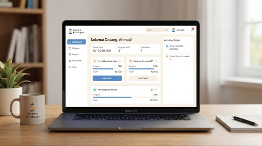
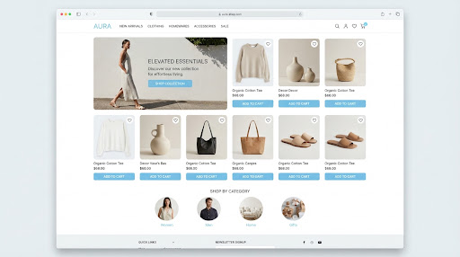

Tentang Saya & Pendidikan
Latar belakang akademis dan fokus pengembangan diri
Saya memiliki ketertarikan mendalam pada rekayasa web dan arsitektur frontend sejak awal menempuh studi kejuruan. Fokus utama saya adalah membangun aplikasi web modern yang fungsional, berkinerja tinggi, dan estetik secara visual. Terbiasa menulis kode yang terstruktur, adaptif terhadap perkembangan teknologi terbaru, serta antusias dalam memecahkan tantangan antarmuka pengguna yang kompleks.
Riwayat Pendidikan & Pelatihan
SMK Negeri 2 Surakarta
2025 - SekarangPengembangan Perangkat Lunak dan Gim (PPLG)
- Pemrograman Dasar & Struktur Logika: Pemahaman algoritma komputasi, Object-Oriented Programming (OOP) dasar, dan pemikiran komputasional analitis.
- Pengembangan Web Modern: Penguasaan HTML5 semantik, arsitektur tata letak Tailwind CSS responsif, JavaScript ES6+, dan eksplorasi komponen React.
- Database & Kolaborasi Git: Desain relasional MySQL, alur kerja version control Git/GitHub, dan penerjemahan desain visual Figma menjadi kode web siap pakai.
Pelatihan Mandiri & Eksplorasi Frontend
2025Pembelajaran Mandiri & Komunitas Developer
Belajar mandiri melalui platform coding interaktif dan komunitas pengembang untuk memperdalam pemahaman modern frontend architecture, reusable component design, dan integrasi API asinkron.
Technical Skills
Kumpulan keahlian teknis dan kemampuan interpersonal
Hard Skills & Stack Teknologi
HTML5 & CSS3
Semantic layout, modern flexbox, CSS Grid, animasi UI.
JavaScript (ES6+)
DOM Manipulation, Async/Await, Fetch API, Modular code.
Tailwind CSS
Utility classes, responsive design, custom theme tokens.
React.js
Functional Components, Hooks, State, SPA architecture.
MySQL Database
Relational Schema, CRUD, Query Optimization, Foreign Keys.
Git & GitHub
Version Control, Branching, Pull Requests, Commit convention.
Soft Skills & Nilai Kerja
Featured Projects
Koleksi proyek pilihan yang telah saya kembangkan
SIPERU Purbowardayan
Sistem Informasi Peminjaman Ruang Paroki SPMR Purbowardayan. Aplikasi manajemen peminjaman dan penjadwalan ruang gereja paroki terintegrasi dengan kalender peminjaman real-time.

Lentera Kehidupan
Aplikasi Android pelacak progres membaca Alkitab harian dengan penentuan target bacaan, tracking streak harian, pemilihan kanon (Katolik & Protestan), riwayat bacaan, serta sistem badge gelar rohani.
Project-1 (Java Core & Algorithms)
Implementasi konsep Object-Oriented Programming (OOP), struktur data dasar, dan modul logika komputasi dalam pengembangan aplikasi perangkat lunak desktop.

EduConnect - Portal Akademik
Eksplorasi antarmuka dashboard manajemen akademik siswa dan visualisasi data kelas yang responsif dan interaktif.
Mari Terhubung & Berkolaborasi
Ada ide proyek menarik atau tawaran magang? Kirimkan pesan di bawah ini!